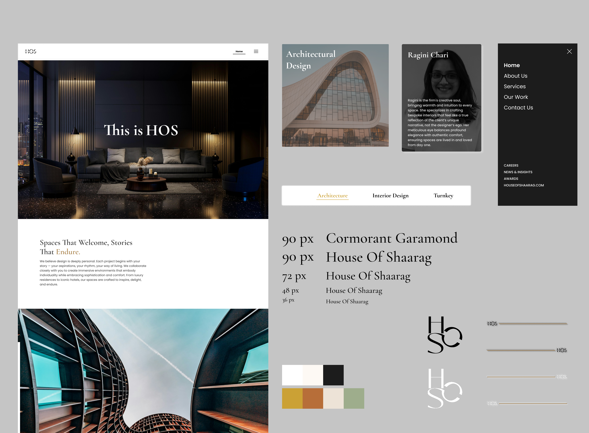
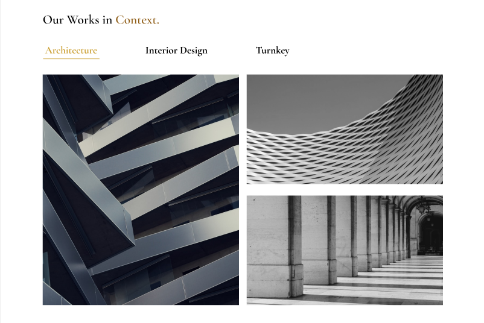
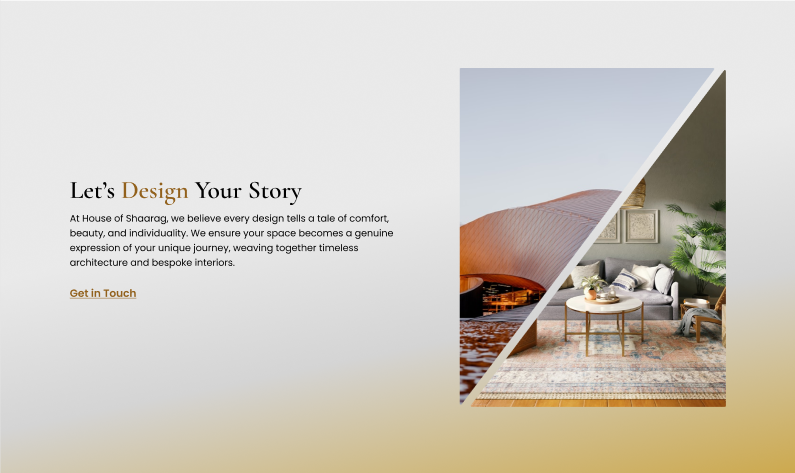
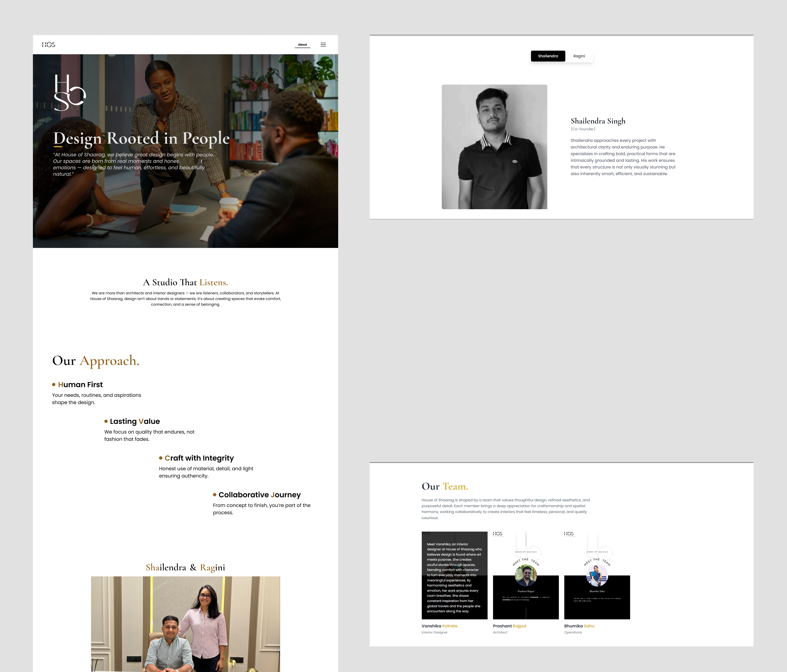
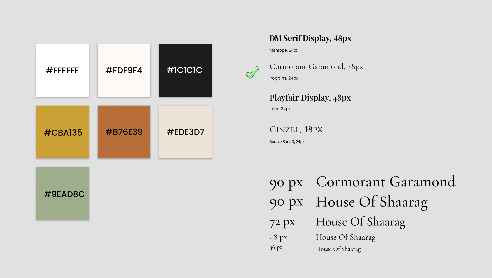

Web design & build · live
House of Shaarag
The website for a bespoke interior design and architecture studio, built so the site itself reads as the quiet luxury the studio is selling.

- Timeline
- July 2025 to Dec 2025
- Role
- Full-stack developer, UX & UI designer
- Platform
- Web
- Process
- Empirical research, socio-technical discovery, requirement analysis, service mapping, high-fidelity prototyping, empirical usability testing
- Tech stack
- Django · Figma · Tailwind CSS · Google Materials · HTML · CSS · JavaScript
The Brief
House of Shaarag is a bespoke interior design and architecture studio centered on quiet luxury. They create residential and commercial spaces that balance light, texture, and proportion—spaces built around the client's unique story rather than a rigid house style. Their work ranges from private homes to high-end hospitality.
For a studio whose entire value rests on taste and craft, the website is a prospective client's first impression. It must pass that test before a single project is even discussed. A generic or cluttered site would quietly contradict everything the studio represents. Therefore, the real challenge wasn't about features, it was about design. The site needed to feel as considered and restrained as their interiors, letting the photography speak for itself while still working as an effective channel for new business.
Research
Learning the visual language of luxury before designing in it.
Because this was a design challenge, the research was about reference and restraint rather than user interviews. High-end interior and architecture studios share a recognisable visual language, and the goal was to understand it well enough to design fluently inside it.
The pattern across the category is consistent: large, slow photography given room to breathe, generous whitespace, a restrained palette lifted by a single warm metallic accent, a serif display paired with a quiet sans, and almost no decorative interface chrome. The signal of premium is created by space and discipline, not by ornament. The lesson taken into the design was that perceived quality rises as the interface gets quieter, so the site should subtract rather than add.
References
These are the following websites I took references from while designing House Of Shaarag
| Studio Name | Website |
|---|---|
| HBA | hba.com |
| WATG | watg.com |
| GA Group | thega-group.com |
| AvroKO | avroko.com |
Audience
Who the site has to win over.
The site speaks to more than one kind of visitor, which shaped both the design and the structure. These are the brand's target audiences rather than interviewed individuals.
The residential client
Commissioning a home and paying for an eye they trust.
Wants to see the studio's taste immediately, feel that their own story will be heard, and sense the calm and care the spaces promise. Persuaded by photography and restraint, not by feature lists.
The commercial client
A hospitality or workspace project, like the Presto office.
Needs proof of range and a credible, transparent process from first sketch to final detail, and reassurance the studio can carry a larger build end to end.
Information Architecture
A simple core, widened deliberately for reach.
The core of the site is intentionally simple, because a luxury brand should never make a visitor work: Home, About, Services, split into Architecture, Interior, and Turnkey or Consultancy, a Portfolio, and Contact. That is the whole path from arrival to enquiry.
The more deliberate decision was to add two sections that most studio sites leave out: a Careers section and a News and Insights blog. Both exist to widen the site's reach. The blog gives the studio a reason to appear in search beyond its project names and lets it show thinking, not just finished rooms, which keeps people returning between commissions. Careers signals a studio that is growing and gives talent a way in, which is itself a credibility signal to clients. Together they turn a brochure that is visited once into a site with reasons to come back.
Sitemap
Home, About, Services, Portfolio, News and Insights, Careers, and Contact.
Design
The quiet-luxury system, made concrete.
The whole design rests on restraint. A warm, near-neutral palette is lifted by a single gold accent, a serif display carries the headlines while a clean sans handles everything else, and the layout is built around generous whitespace and large photography rather than dense content. Motion is slow and understated, present only to feel considered, never to perform.
The work leads on every page. Project imagery runs large, the interface chrome around it stays minimal, and hierarchy is created with scale and space so each space can breathe. The discipline was knowing what to leave out, which is the same discipline the studio applies to a room.


Testing & QA
Holding the polish across devices.
For an image-led luxury site, the quality bar lives in the details, so the real testing was responsive behaviour across phones, tablets, and desktops, visual consistency of type and spacing on every page, and performance, keeping a heavily photographic site fast despite the weight of its imagery.
Review Rounds & Feedback
Ragini
Founder, House of Shaarag
"The platform beautifully mirrors the ethos of our physical projects. From the seamless transitions to the sophisticated layout, every detail feels intentionally crafted. It’s exactly what I envisioned for our brand's digital presence. I couldn't be happier with the final build."
Aditi N.
Family Circle
"We absolutely love the new website! It perfectly captures what our brand is all about—luxury, but keeping things simple and clean. It feels very true to who we are."
Karan V.
Family Circle
"The site looks amazing. It really hits the nail on the head when it comes to our style. It feels incredibly high-end, but still so simple and easy to look through. You guys did a fantastic job."
Technical Implementation
How a photography-heavy site stays fast.
The site was built with Django for templating and for the content behind projects, the blog, and careers, with Tailwind, HTML, and CSS on the front end. The defining technical concern was performance under the weight of imagery, so photography is served in optimised formats and loaded lazily, which keeps the experience quick without compromising the large, high-quality visuals the brand depends on.
Making projects, posts, and roles content-driven also matters beyond performance: it lets the studio keep the portfolio, the blog, and Careers current without a developer, which is what makes the reach strategy in the architecture actually sustainable.
Final Design
The shipped product and its system.


Style at a glance
A restrained warm-neutral base, a single gold accent drawn from the brand, a serif display paired with a clean sans, and spacing used as the primary tool for hierarchy.

Reflection
Designing for a brand where taste is the primary product required a complete shift in how I approach layouts. To figure out exactly what makes a digital interface feel high-end, I spent time deconstructing different design movements—looking at the raw structural focus of brutalism, the functional clarity of Bauhaus, and the deliberate emptiness of abstract minimalism. What became clear is that 'quiet luxury' isn't just about removing UI elements; it’s about the heavy responsibility placed on what remains. When you strip away decorative elements like borders, shadows, and background shapes, your content strategy has to be flawless. Every single word and image needs a specific purpose, or the entire design loses its structure. Because the interface was kept so minimal, I had to rely almost entirely on typography to create visual hierarchy. I learned a massive amount during this phase about font pairing, exact textual sizing, and weight distribution. I realized that adjusting a font size by just a few pixels, or making subtle tweaks to line height and letter spacing, completely changes the rhythm of a page. It taught me how to guide a user's eye and signal importance using only text scale and negative space, rather than relying on traditional buttons or colored containers.
On the development side, the challenge was delivering this highly visual, image-heavy experience without sacrificing speed. A luxury experience shouldn't keep a user waiting to load. I had to dive deep into front-end performance optimization, specifically learning how to properly implement WebP image formatting to drastically reduce file sizes without losing the crispness of the photography. Combining this with a robust lazy loading architecture meant the site could handle massive, high-resolution architectural images while remaining lightning-fast and completely smooth to navigate.